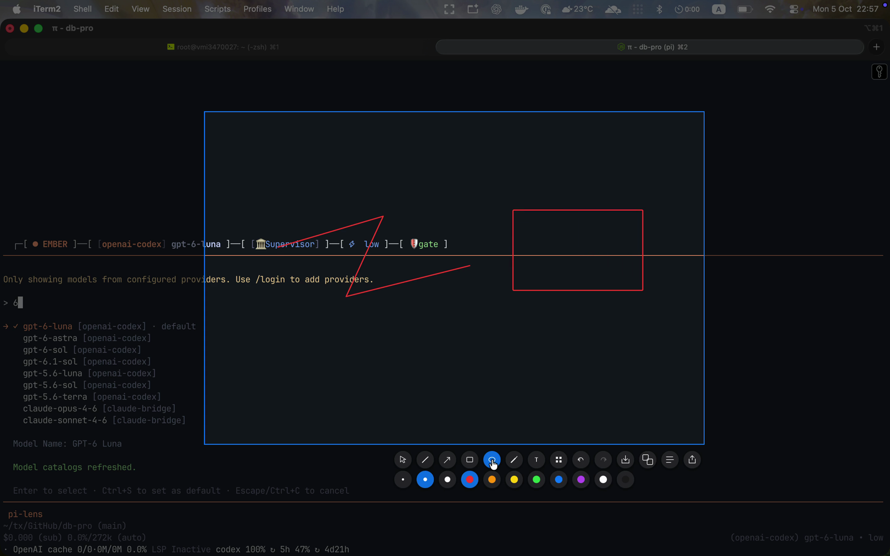

Annotate in place
Draw directly on the dimmed overlay: pen, arrow, rectangle, ellipse, highlighter, pixelate. Strokes live on a physical-resolution layer, so they stay as sharp as the capture itself. Undo and redo are one click.
NATIVE SCREENSHOT TOOL
Pixel-perfect region captures across every monitor, with annotations and native OCR. Pure Rust, no Electron.

Draw directly on the dimmed overlay: pen, arrow, rectangle, ellipse, highlighter, pixelate. Strokes live on a physical-resolution layer, so they stay as sharp as the capture itself. Undo and redo are one click.

Quickshort sits in the menu bar. Press ⌘⇧S from anywhere and a dimmed overlay covers every monitor at once. Esc cancels, and the shortcut is re-recordable in Settings.
Captures request framebuffer resolution, not logical points. On a Retina display the PNG is 2880px wide and text stays crisp at 100% zoom. Mixed-DPI setups map each monitor through its own scale.
⌘T runs the selection through macOS Vision (Windows.Media.Ocr on Windows) and puts the text on your clipboard with a toast confirmation. Native engines, no bundled models, no cloud calls.
Start a drag on one display and finish it on another. Each monitor's crop is mapped through its own origin and DPI, then stitched into a single image.
The tray checks GitHub Releases once a day. An update downloads the new .app, verifies its SHA-256, swaps it in place with rollback on failure, and relaunches. A stable self-signed identity keeps Screen Recording and Accessibility grants intact across updates.

THE PIPELINE
Every monitor lands in RAM in one shot. ScreenCaptureKit, GDI BitBlt, or PipeWire shm.
Borderless window per monitor dims the frames and tracks the drag in virtual coordinates.
Selection coordinates resolve through each monitor's origin and DPI scale factor.
Per-monitor crops merge on a worker thread while the event loop stays free.
Detected: macOS
Custom tap, quarantine stripped for you.
brew tap truongnat/tap
brew install --cask quickshort
Native binary for your platform is not published yet. Build takes a minute.
git clone https://github.com/truongnat/quickshort
cd quickshort && cargo build --release
macOS 14+ needs Screen Recording and Accessibility permissions. Linux builds from source, Windows is compile-checked.